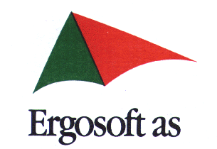

Ergosoft AS er heleid selskap i Telenor Bedrift AS, et selskap i Telenor Gruppen AS. Telenor, med en omsetning på 18 milliarder kroner og 18.000 ansatte, utgjør en av de mest verdiskapende konsernene i Norge. Ergosoft er en av Skandinavias ledende produsenter og distributører av økonomisystemer. Selskapets sentrale produkter er ERGOSOFT Regnskap, Lønn/personal, Timeregnskap, Ordre/lager/faktura/innkjøp, FLEXI Budsjettsystem og SOLVER Konserrapportering. Systemplattformene er DOS, OS/2, UNIX, Windows og nettverk. Systemutviklere softwareØnsker du en utfordrende jobb i et av Norges mest spennende utviklingsmiljøer?Arbeidsoppgaven
Kvalifikasjoner

Ergosoft as, PB 61, Kalbakken, 0901 OSLO |